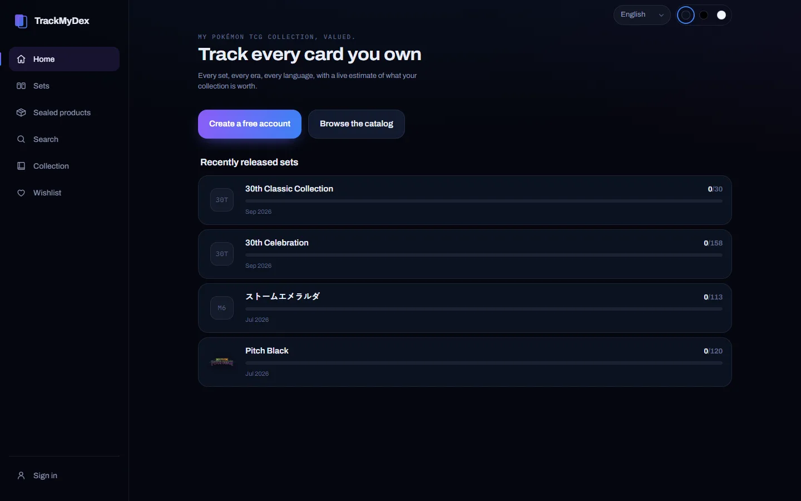
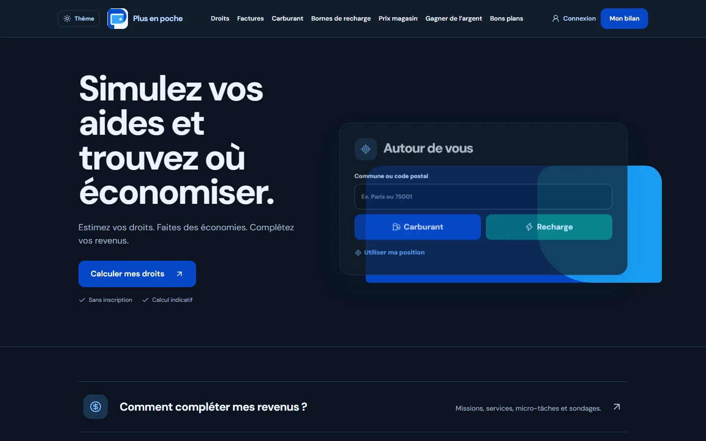
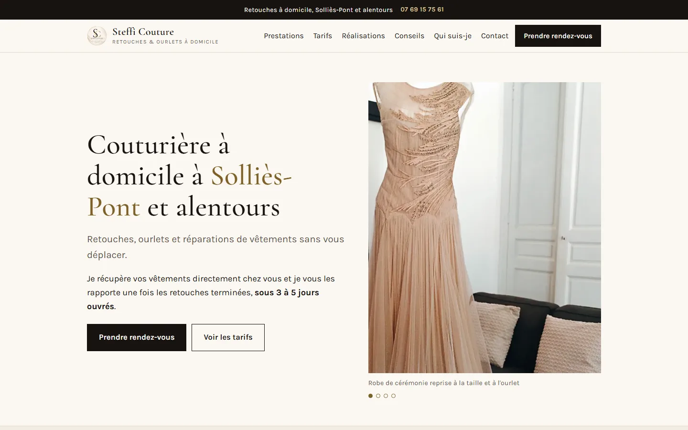

trackmydex.comEn ligne
TrackMyDex
Catalogue et suivi de collection de cartes Pokémon avec prix multilingues.
Ouvrir le siteSwan Carenini
Des produits utiles, simples à utiliser et maintenus dans le temps.
Voir les dépôts GitHubSites en production et produits en cours.

trackmydex.comCatalogue et suivi de collection de cartes Pokémon avec prix multilingues.
Ouvrir le site
plusenpoche.frSimulateur de droits et outils pour comparer ses dépenses courantes.
Ouvrir le site
stefficouture.frPrésentation, tarifs et réservation pour une couturière à domicile dans le Var.
Ouvrir le site